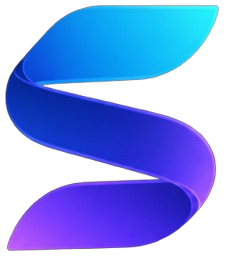
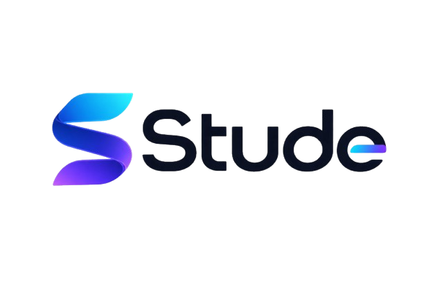

01
APRENDIZAGEM
Study+
Conteúdos, aulas e experiências para aprender e explorar novos conhecimentos.
EM DESENVOLVIMENTO ↗

Um novo universo de aprendizagem está tomando forma. Estamos trabalhando em cada detalhe para criar uma experiência que amplie horizontes, desperte curiosidade e transforme possibilidades em caminhos.
Ainda estamos preparando o terreno. Em breve, você poderá conhecer tudo o que está nascendo por aqui.
O Stude nasce de uma ideia simples: o conhecimento pode abrir caminhos que ainda nem imaginamos. Queremos aproximar pessoas, ideias e experiências em um ambiente onde aprender seja também descobrir.
O Stude será a porta de entrada para um conjunto de experiências conectadas pelo conhecimento.
Conteúdos, aulas e experiências para aprender e explorar novos conhecimentos.
EM DESENVOLVIMENTO ↗Desafios, atividades e avaliações para transformar conhecimento em prática.
EM DESENVOLVIMENTO ↗Línguas, culturas e novas formas de se conectar com o mundo.
EM DESENVOLVIMENTO ↗Um espaço de possibilidades para experiências de aprendizagem.
EM DESENVOLVIMENTO ↗O próximo passo está sendo preparado. Obrigado por acompanhar o nascimento do Stude.